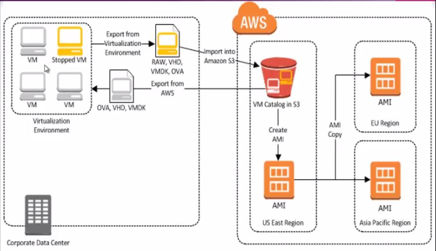

Importing your VM's into AWS Using VM Import/Export.
{kind=link}
Step 1:We are going to migrating the below VM to AWS from our Vmware environments. you can find that the cvijay.com running in the below VM.

Step 2:Go to our VMware environment.

Step 3:Shutdown the VM which you want to migrating to AWS.

Step 4:Go to file on VMware and Click Export to OVF and save it on local machine.

Step 5:Save it on local machine.

Step 6:Now exported the VM image in our loacal machine and the file as Windows2008-disk1.vmdk.

Step 7:Go to IAM on AWS console to create a user account to configure the aws sms command line interface(CLI).

Step 8:Click Users.

Step 9:Add User.

Step 10:Provide the User Name and give the Programmatic access.

Step 11:Setup the permissions. Click Next.

Step 12:Give the Tags.

Step 13:Click Create User.

Step 14:Get the access and secret keys by downloading and configure the AWS CLI.

Step 15:Click Roles on same console and Create a service role with trust relationship policy that allows VM Import.

Step 16:Choose the service and Click Next.

Step 17:Attach the VM Import/Export policy.

Step 18:Add the Tags.

Step 19:Give the Role Name. Click Create role.

Step 20:Now created the service role as vmimport to get the access for vm import/export.

Note: Just open vmimport role and Click Trust relationships then Edit trust relationships and add the below policy as per the screen below. and attach to this role to ec2 instance where you are execute the import task.


Step 21:Go to S3 on AWS console and create a bucket where the image exported from Vmware as demonstarted will be stored.

Step 22:Click Create Bucket.

Step 23:Mention the bucket name and choose the region. Click Create.

Step 24:You can find the below bucket has been created as vmimportexport-bkt.

Step 25:Now upload the exported vmdk image of our VM to the bucket.Click Upload.

Step 26:Click Add files.

Step 27:Choose the vmdk image file as per the below. Click Open.

Step 28:Click Upload.

Step 29:Now successfully uploaded the VM image file.

Step 30:After you upload your VM image file to Amazon S3, you can use the AWS CLI to import the image. before that need to create the Tasks as per the below and execute the task to import the image from S3 bucket. So now i created as containers.json file.

Step 31:Executed the containers.json file by following command via CLI,
aws ec2 import-image --description "Windows 2008 image" --disk-containers file://containers.json --region us-west-2 --profile vijay

Step 32:After executed the command, you can find the below status of VM import.

Step 33:Also you will check the status by following commands,
aws ec2 describe-import-image-tasks --import-task-ids import-ami-04c76cc67a8a52ea4 --region us-west-2 --profile vijay.

Step 34:Once created the AMI, you can launch the Instance by clicking Launch.

Step 35:Click Next.

Step 36:Configure the VPC and Subnet.Click Next.

Step 37:Click Next.

Step 38:Click Next.

Step 39:Choose the Security Group.Click Review and Launch.

Step 40:Click Launch.

Step 41:Choose the key paire and Click Launch Instance.

Step 42:Your VM image has been launched successfully, copy the public IP and connect it by RDP.

Step 43:You can see the below as i logged in to server.

Step 44:See the below same website running on the server.

Step 45:The website is working properly on the same VM.